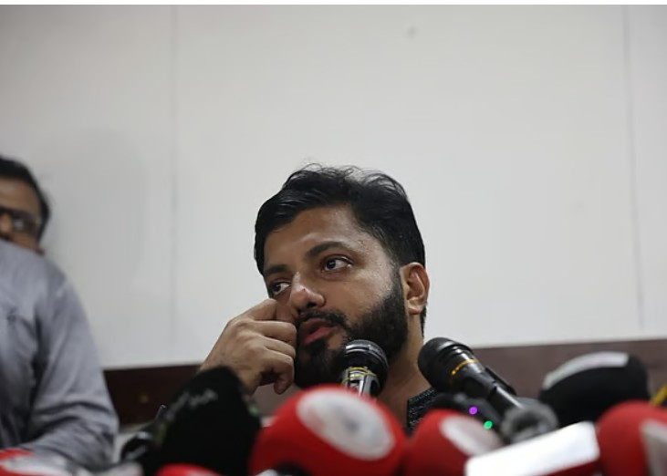

মুক্তিযুদ্ধবিষয়ক প্রতিমন্ত্রীর পদ থেকে পদত্যাগের ঘোষণা দিতে ডাকা সংবাদ
সম্মেলনে আবারও অস্ত্রকাণ্ডের পক্ষে কথা বলেছেন
ইশরাক হোসেন।
তিনি বলেছেন, ‘যদি আমার দ্বারা কোনো ভুল হয়ে থাকে, আমি কাউকে আঘাতপ্রাপ্ত করে
থাকি এই অভিযানের মাধ্যমে, সেটার জন্য আগে আমি দুঃখ প্রকাশ করে নিচ্ছি।
কিন্তু আমি দৃঢ়ভাবে বিশ্বাস করি, আমি কোনো ভুল সেদিন করিনি। আমি কেবল আমার
নিরাপত্তার জন্য আমার হাতে অস্ত্রটুকু যতটুকু সময় প্রয়োজন রেখেছিলাম,
পরবর্তীকালে সেটি আর আমার দৃশ্যমান হয়নি।’
